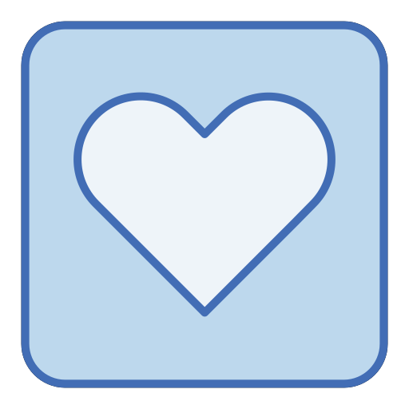

Cuervo o Espía de Odín
"¿Cuervo o Espía de Odín? Descifrando el misterio de estos pájaros astutos"
Introducción: Los cuervos han sido símbolos de inteligencia y misterio a lo largo de la historia, y en la mitología nórdica, Odín, el dios principal, tenía dos cuervos llamados Huginn y Muninn, que volaban por el mundo y le informaban sobre lo que veían. ¿Podría ser que los cuervos que vemos hoy en día sean descendientes de estos mensajeros alados?
La conexión mitológica: Los cuervos eran considerados sagrados en la mitología nórdica, y la conexión con Odín agrega un matiz intrigante a su comportamiento inteligente. ¿Podrían estos pájaros estar llevando a cabo una tradición ancestral de vigilancia?
Mostrar mas
